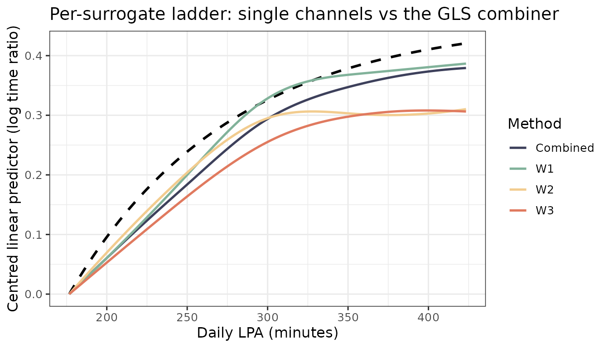

Simulation study: Oracle vs Naive vs SIMEX
Source:vignettes/simulation-study.Rmd
simulation-study.RmdA small Monte Carlo replicating the structure of the manuscript
appendix simulation. Three estimators are compared on the same
r replicates:
-
Oracle – fits on the true latent exposure
X_true(an upper bound). -
Naive – fits on the GLS-combined surrogate
W_barwithout ME correction. -
SIMEX – fits on
W_barwith the SIMEX correction.
The vignette uses N_REP = 20 replicates so it builds in
under a minute; the manuscript figure uses 500. Set N_REP
higher locally to reproduce.
library(aftsplex)
N_REP <- 20L
N <- 1500
N_VAL <- 400
B_INNER <- 10
DF <- 4
LAMBDA <- c(0.5, 1, 1.5, 2)
x_grid <- seq(qnorm(0.02, 10, sqrt(5)),
qnorm(0.98, 10, sqrt(5)),
length.out = 100)
truth <- f_true(x_grid) - f_true(x_grid[1])
V_REF <- c(V1 = 30, V2 = 30, V3 = 0, V4 = 0)Single-replicate driver
run_one <- function(seed) {
sim <- generate_aft_data(n = N, n_val = N_VAL, seed = seed)
cal <- fit_me_calibration(sim$validation)
W <- as.matrix(sim$survival[, cal$W_cols])
g <- gls_combine(W, cal)
dat <- sim$survival
dat$W_bar <- g$W_bar
fit_oracle <- fit_aft_spline(dat, "X_true",
covariates = names(V_REF), df = DF)
fit_naive <- fit_aft_spline(dat, "W_bar",
covariates = names(V_REF), df = DF)
lp_oracle <- predict_curve(fit_oracle, x_grid, V_REF, "X_true")
lp_naive <- predict_curve(fit_naive, x_grid, V_REF, "W_bar")
s <- simex_aft_spline(dat, x_var = "W_bar",
sigma_w_sq = g$sigma_w_sq,
covariates = names(V_REF), v_ref = V_REF,
lambda = LAMBDA, B = B_INNER,
x_grid = x_grid)
list(Oracle = lp_oracle - lp_oracle[1],
Naive = lp_naive - lp_naive[1],
SIMEX = s$curve_simex)
}Run the Monte Carlo
t0 <- Sys.time()
res <- lapply(seq_len(N_REP), function(i) run_one(20260601L + i))
elapsed <- Sys.time() - t0
elapsed
#> Time difference of 16.61473 secsISE summary
methods <- c("Oracle", "Naive", "SIMEX")
ise_mat <- sapply(res, function(r)
vapply(methods, function(m) {
e <- r[[m]] - truth
delta_x <- diff(x_grid)
sum(((e[-1] + e[-length(e)])^2 / 4) * delta_x)
}, numeric(1))
)
rownames(ise_mat) <- methods
data.frame(
Mean = round(rowMeans(ise_mat), 3),
MCSE = round(apply(ise_mat, 1, sd) / sqrt(N_REP), 4),
Median = round(apply(ise_mat, 1, median), 3)
)
#> Mean MCSE Median
#> Oracle 0.065 0.0108 0.043
#> Naive 0.181 0.0254 0.140
#> SIMEX 0.084 0.0162 0.057The pattern matches the manuscript: Naive carries 2-3x the ISE of Oracle (attenuation), and SIMEX recovers most of that gap.
Mean curves
mean_curve <- function(m) rowMeans(sapply(res, function(r) r[[m]]))
fits <- setNames(lapply(methods, mean_curve), methods)
plot_curves(x_grid, truth, fits,
title = "Mean SIMEX / Naive / Oracle curves across simulated replicates")
A daily-minutes scale (mean ~300 min)
The arbitrary-unit scale above keeps the code minimal, but the
manuscript expresses exposure as daily light-physical-activity
(LPA) minutes on the log scale – the analysis
scale of the AFT model, log T = b0 + f(log W) + .... The
DGP arguments x_mean, x_sd, and
f_args re-express the same model on that scale:
x_mean = log(300) (about 300 min/day),
x_sd = 0.45 (95% roughly in [124, 725] min), and a
dose-response threshold at log(150), below which the curve
is flat. Display figures exponentiate the axis back to minutes (see the
vignette("applied-lpa") article); here we keep the internal
log scale for the ISE comparison, and var_x = x_sd^2 is the
exposure variance fed to sigma_u_for_reliability().
SC <- list(x_mean = log(300), x_sd = 0.45,
f_args = list(x_min = log(150), alpha = 3.0, beta = 0.6))
f_min <- function(x) do.call(f_true, c(list(x), SC$f_args))
x_grid_m <- seq(qnorm(0.05, SC$x_mean, SC$x_sd),
qnorm(0.95, SC$x_mean, SC$x_sd), length.out = 80)
truth_m <- f_min(x_grid_m) - f_min(x_grid_m[1])
N_REP_M <- 10L # small for a fast build; raise locally for the manuscript
N_M <- 1200
N_VAL_M <- 350
ise_of <- function(curve) {
e <- curve - truth_m
dx <- diff(x_grid_m)
sum(((e[-1] + e[-length(e)])^2 / 4) * dx)
}Reliability sweep
How well does SIMEX recover the curve as the surrogate gets noisier?
We sweep the mean per-surrogate reliability over
0.5, 0.65, 0.8 (poor -> good), holding everything else
fixed; sigma_u_for_reliability() returns the matching
measurement-error covariance.
run_full <- function(seed, Sigma_u) {
sim <- generate_aft_data(n = N_M, n_val = N_VAL_M, Sigma_u = Sigma_u,
x_mean = SC$x_mean, x_sd = SC$x_sd,
f_args = SC$f_args, seed = seed)
cal <- fit_me_calibration(sim$validation)
W <- as.matrix(sim$survival[, cal$W_cols])
g <- gls_combine(W, cal)
dat <- sim$survival; dat$W_bar <- g$W_bar
fo <- fit_aft_spline(dat, "X_true", covariates = names(V_REF), df = DF)
fn <- fit_aft_spline(dat, "W_bar", covariates = names(V_REF), df = DF)
lo <- predict_curve(fo, x_grid_m, V_REF, "X_true")
ln <- predict_curve(fn, x_grid_m, V_REF, "W_bar")
s <- simex_aft_spline(dat, "W_bar", sigma_w_sq = g$sigma_w_sq,
covariates = names(V_REF), v_ref = V_REF,
lambda = LAMBDA, B = B_INNER, x_grid = x_grid_m)
list(Oracle = lo - lo[1], Naive = ln - ln[1], SIMEX = s$curve_simex)
}
rel_levels <- c(0.5, 0.65, 0.8)
sweep <- t(sapply(rel_levels, function(r) {
Su <- sigma_u_for_reliability(r, var_x = SC$x_sd^2)
rep <- lapply(seq_len(N_REP_M), function(i) run_full(70000L + i, Su))
vapply(methods, function(m) mean(vapply(rep, function(z) ise_of(z[[m]]), 0)),
numeric(1))
}))
rownames(sweep) <- sprintf("reliability = %.2f", rel_levels)
round(sweep, 3)
#> Oracle Naive SIMEX
#> reliability = 0.50 0.025 0.107 0.058
#> reliability = 0.65 0.025 0.068 0.036
#> reliability = 0.80 0.025 0.044 0.029As reliability falls, the Naive ISE inflates sharply from worsening attenuation, and SIMEX removes a large part of that excess – roughly halving the Naive ISE at reliability 0.5. The gain shrinks as reliability improves: by 0.8 the naive attenuation is already small, so the correction has little left to do (and its extrapolation variance can offset the tiny remaining bias). SIMEX earns its keep most when the measurement is poorest.
Per-surrogate ladder
The GLS combiner pools the three surrogates. Here we give the
surrogates distinctly different quality (relative error variances
1 : 3 : 6, a mean reliability of 0.65 spanning roughly 0.84
down to 0.47) and run the estimator on each surrogate
alone (surrogate_pattern = "^W1$", etc.)
and on the combiner. This uses the existing
surrogate_pattern argument – no engine change.
patterns <- c(W1 = "^W1$", W2 = "^W2$", W3 = "^W3$", Combined = "^W[0-9]+$")
Su_mid <- sigma_u_for_reliability(0.65, var_x = SC$x_sd^2, ratios = c(1, 3, 6))
ladder_curves <- lapply(seq_len(N_REP_M), function(i) {
sim <- generate_aft_data(n = N_M, n_val = N_VAL_M, Sigma_u = Su_mid,
x_mean = SC$x_mean, x_sd = SC$x_sd,
f_args = SC$f_args, seed = 80000L + i)
sapply(patterns, function(p) {
cal <- fit_me_calibration(sim$validation, surrogate_pattern = p)
W <- as.matrix(sim$survival[, cal$W_cols, drop = FALSE])
g <- gls_combine(W, cal)
dat <- sim$survival; dat$W_bar <- g$W_bar
s <- simex_aft_spline(dat, "W_bar", sigma_w_sq = g$sigma_w_sq,
covariates = names(V_REF), v_ref = V_REF,
lambda = LAMBDA, B = B_INNER, x_grid = x_grid_m)
s$curve_simex
})
})
ladder_ise <- rowMeans(sapply(ladder_curves,
function(M) apply(M, 2, ise_of)))
data.frame(SIMEX_ISE = round(ladder_ise, 3))
#> SIMEX_ISE
#> W1 0.027
#> W2 0.060
#> W3 0.087
#> Combined 0.033The single-surrogate ISE ranks by reliability (W1 best,
W3 noisiest), and the combiner sits at or below even the
best single channel – the payoff for pooling correlated
measurements.
mean_ladder <- sapply(names(patterns), function(nm)
rowMeans(sapply(ladder_curves, function(M) M[, nm])))
pal <- stagill_palette()
ladder_cols <- c(W1 = unname(pal["MutedTeal"]),
W2 = unname(pal["ApricotCream"]),
W3 = unname(pal["BurntPeach"]),
Combined = unname(pal["TwilightIndigo"]))
plot_curves(x_grid_m, truth_m,
fits = as.list(as.data.frame(mean_ladder)),
colors = ladder_cols,
x_lab = "Daily LPA (minutes)",
title = "Per-surrogate ladder: single channels vs the GLS combiner")